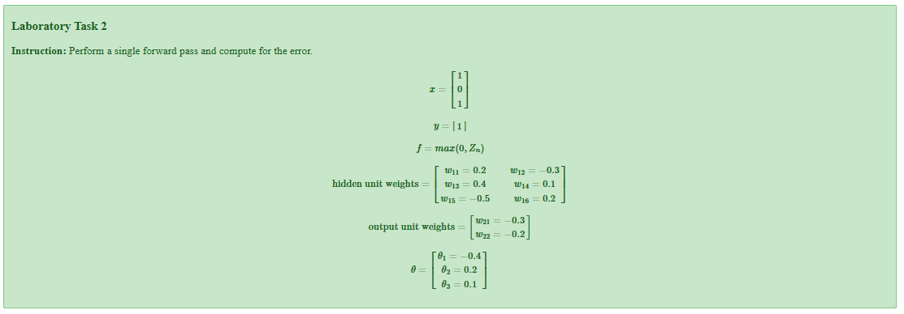

Laboratory Task 2 - Single Forward Pass and Error Analysis#
DS Elective 4 - Deep Learning#
Name: Keith Laspoña
Year & Section: DS4A

1. Perform standard imports#
import numpy as np
2. Define given values#
x = np.array([1, 0, 1])
y_actual = 1
W_hidden = np.array([[0.2, -0.3], [0.4, 0.1], [-0.5, 0.2]])
W_output = np.array([[-0.3], [-0.2]])
theta = np.array([-0.4, 0.2, 0.1])
learning_rate = 0.9
print(f"Input: {x}")
print(f"Actual output: {y_actual}")
Input: [1 0 1]
Actual output: 1
5. Calculate output layer weighted sum#
Z3 = (-0.3 * H1) + (-0.2 * H2) + 0.1
print(f"Z3 = {Z3:.6f}")
Z3 = -0.104540
6. Apply sigmoid activation to get final output#
y_predicted = sigmoid(Z3)
print(f"Predicted output: {y_predicted:.6f}")
Predicted output: 0.473889
7. Calculate error#
error = y_actual - y_predicted
print(f"Error = {error:.6f}")
Error = 0.526111
Conclusion#
Input layer: 3 neurons (x = [1, 0, 1])
Hidden layer: 2 neurons with sigmoid activation
Output layer: 1 neuron with sigmoid activation
Key Results#
The network predicted an output of 0.473889 when the target was 1.0
This resulted in an error of 0.526111, indicating the network needs training to improve its predictions
The sigmoid activation function successfully introduced non-linearity at each layer